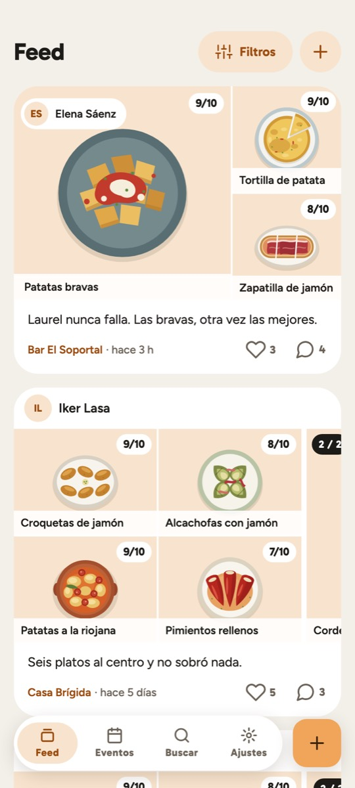
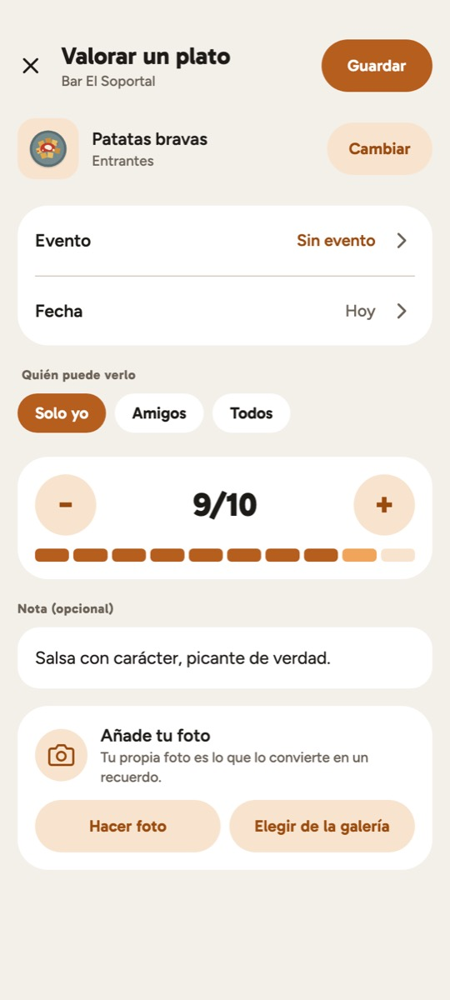
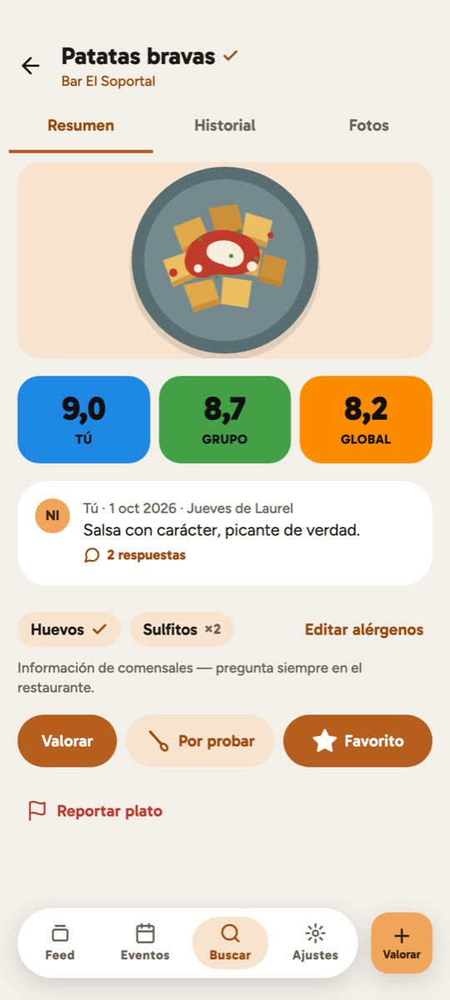
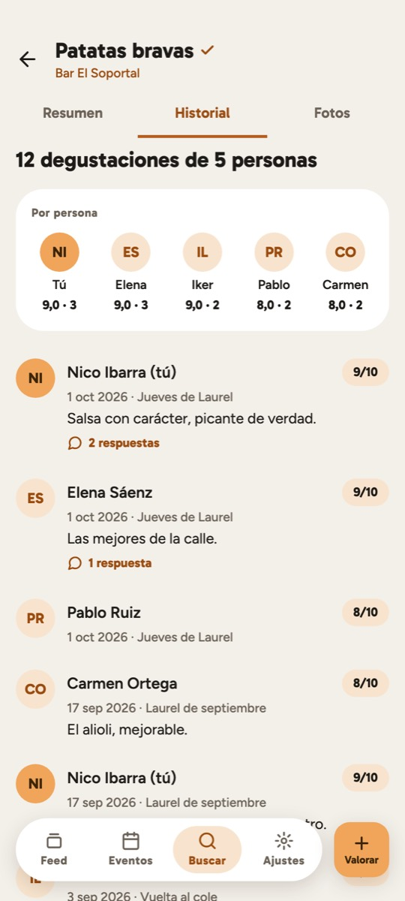
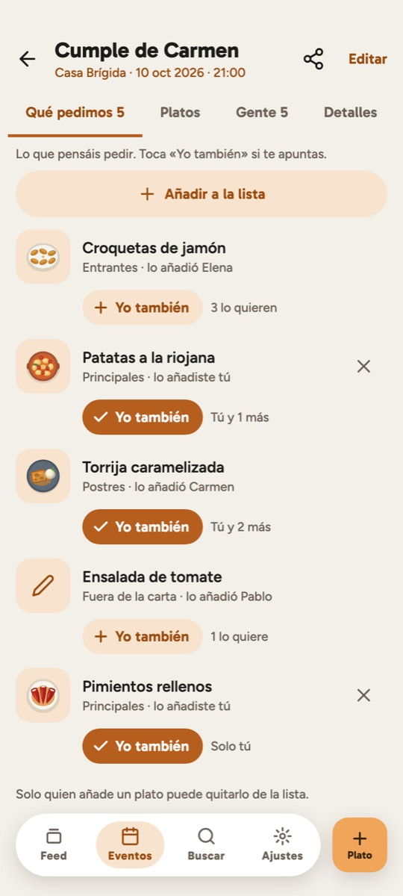
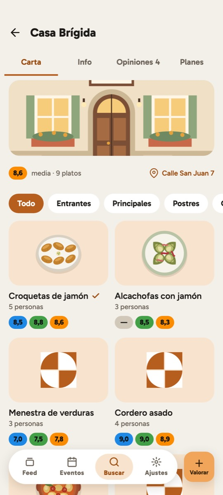
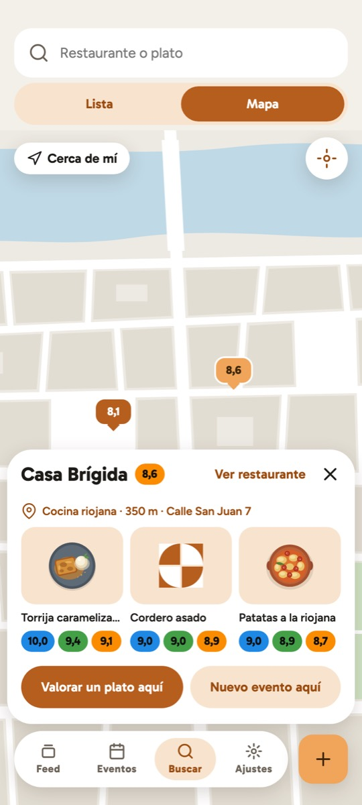
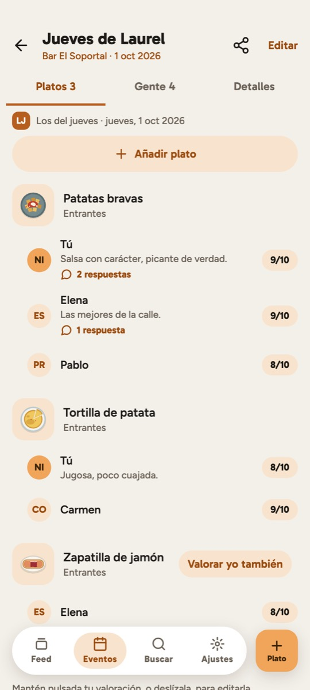

Restaurantes hay muchos. Aquí cuentan los platos.
Cada plato que coméis juntos, recordado.
La memoria compartida de tu grupo de amigos: qué pedisteis, quién lo probó y cuánto os gustó, para saber qué pedir la próxima vez.
Para Android y iPhone · De momento, solo con invitación



Cómo es
-
La memoria de cada plato
No valoras el restaurante: valoras el plato, cada vez que lo pruebas. Las bravas de tu bar de siempre tienen su propia historia, degustación a degustación.
-
Tu nota, la de tu grupo y la de todos
Tres notas de un vistazo: Tú, Grupo y Global. Y en el historial ves quién lo probó y qué le pareció.
-
Quedadas con «Qué pedimos»
Crea el evento, invita a los tuyos y haced la lista antes de llegar: cada uno toca «Yo también» y os sentáis a la mesa sabiendo qué pedir.
-
La carta, por secciones
Los platos de un restaurante, agrupados por las secciones de su carta (entrantes, principales, postres…) y cada uno con vuestras notas.
Tú decides quién ve cada valoración: Solo yo, Amigos o Todos. Sin anuncios ni rastreo publicitario.
Así es
Así será la próxima versión.

Cada vez que lo probasteis Un plato, tres notas 
La lista de «Qué pedimos» 
La carta del restaurante, con vuestras notas 
Busca en el mapa 
Lo que pidió cada uno en la quedada Lo último que han comido tus amigos Valorar un plato en segundos
Consíguela
Taca y a comer está en pruebas con un grupo de amigos. Para entrar hace falta una invitación: escríbenos y te contamos.
- Android · Google Playsolo con invitación
- iPhone · App Storepróximamente
O escribe a hola@tacayacomer.com